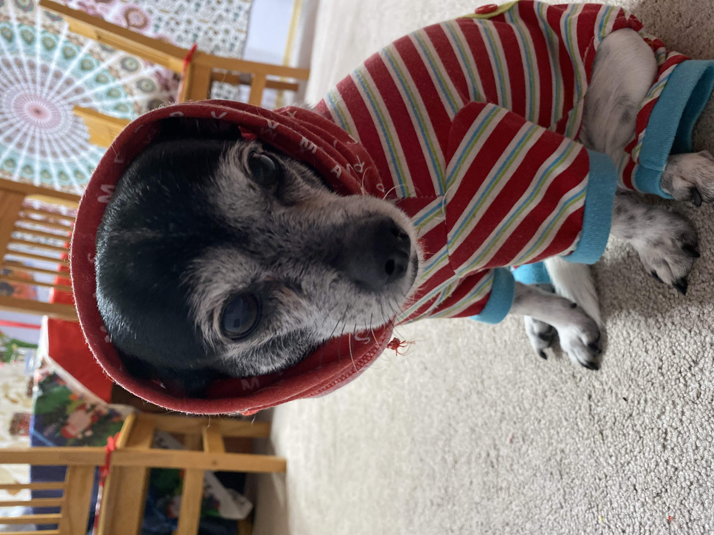

Hello, I'm Shoko
Shoko Takao
I'm a software developer living in Tacoma, Washington.
I have a little Jack of Spades tattoo on the back of my right wrist. It symbolizes one of my favorite quotes:
"A jack of all trades is a master of none, but oftentimes better than a master of one." - Vikor Vicsek
This tattoo serves as a constant reminder to explore all that I am curious about, regardless of the risk of failure.
One of my passions would be for traveling. Some day during this lifetime, I'd like to be able to travel and be in awe of all 7 Wonders of the World. So far I've been to one of the 7.
My Bucket List:
Great Wall of China- Chichen Itza
- Petra
- Machu Picchu
- Christ the Redeemer
- Colosseum
- Taj Mahal
About Shoko
I've always been curious by nature. One of my greatest passions would be constantly learning new skills and seeing what opportunites derive from them. I'm excited to have the opportunity to enter 2021 by starting my journey towards becomming a software developer. Let's work together and crush this course!
My other greatest love would be my little bubushka, Matcha. He's a glorious 11 year old mutt with chins for days. He deserves the best that life has to offer and I intend on giving that to him.
Contact Shoko
I'd love to hear from you. Feel free to contact or follow me: